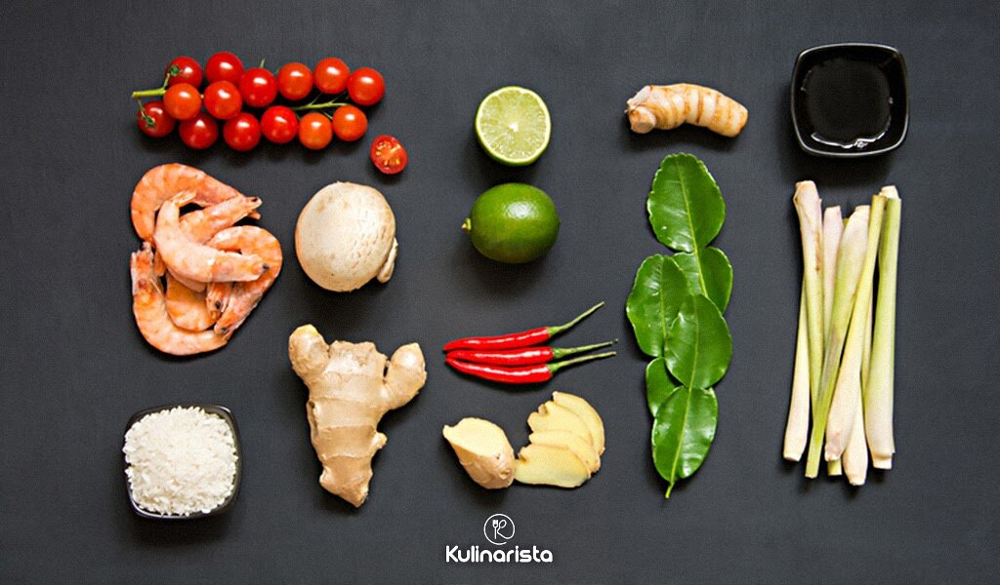
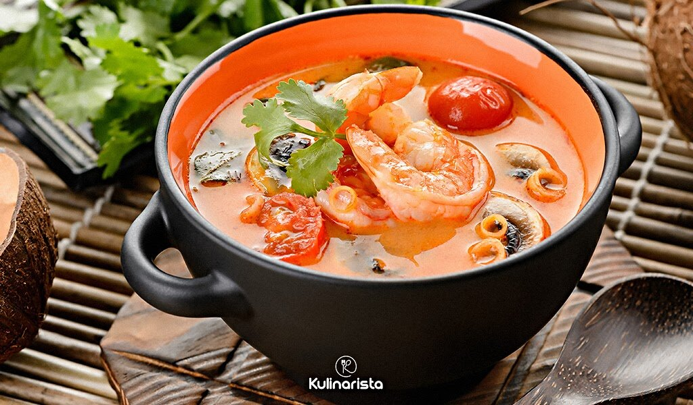

Всем привет!
Поговорим немного о Национальной кухне Бангкока
Пройдя по ссылке, Вы можете познакомиться с особенностями тайской кухни
А здесь мы с Вами разберем пошаговый рецепт тайского супа.
Ничего сложного нет.
Как приготовить легендарный тайский суп по лучшему рецепту.
Как своими руками сделать пасту Том Ям — незаменимый компонент супа.

Для приготовления супа Том Ям нам нужны
- Кокосовое молоко — 300 мл.
Лайфхак:
можно заменить на сливки, обычное молоко или не добавлять совсем.
Задача этого ингредиента — смягчить остроту супа,
но ее можно регулировать количеством острого перца или пасты.
- Острая паста Том Ям — 1 ст. л.
Покупаем готовую или делаем сами.
- Стебель лемонграсса — 5 шт.
Альтернатива — цедра одного лайма или половины лимона.
- Рыбный или куриный бульон — 500 мл.
- Галангал — кусочек в 1-2 см.
Можно заменить имбирем в свежем или сушеном виде.
- Каффир (листья лайма) — 5 шт.
Альтернатива — листья лимона или лайма, проросшего дома из косточек.
- Королевские креветки — 10 шт.
- Грибы — 6 шампиньонов среднего размера
(или грибы шиитаке, вешенки).
- Кинза — 5 веточек.
- Тайский рыбный соус — 1 ст. л.
Можно заменить соевым соусом.
- Коричневый сахар — 0,5 ч. л.
- Острый перец — 1 шт.
- Лайм — 1 шт.
- Помидор — 1 шт.

Пошаговый рецепт супа Том Ям
- Готовим бульон без соли
(или используем 1 бульонный кубик на 0,5 литра воды).
- Добавляем приправы: стебли лемонграсса (или цедру лайма),
нарезанный галангал, листья каффира. Провариваем все 3-5 минут и вылавливаем
из бульона.
- В кипящий бульон добавляем пасту Том Ям, очищенные креветки и нарезанные
на крупные кусочки грибы. Провариваем при небольшом кипении около 5 минут.
- Добавляем рыбный соус, нарезанный колечками чили, сок лайма и порезанный
кубиками помидор без шкурки.
- Вливаем кокосовое молоко. Варим после закипания 2-3 минуты.
- Посыпте кинзой или зеленым луком — и суп Том Ям готов!
